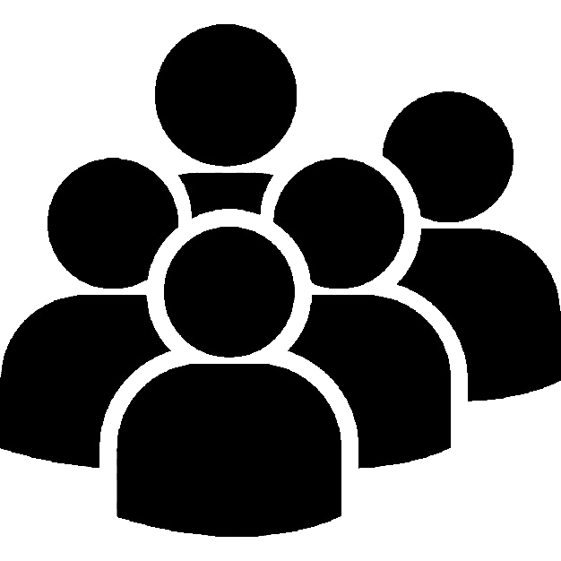

Quem Somos?

A SM.Art é uma instituição voltada para conservação de obras, de modo que museus e galerias de arte não precisam mais se preocupar com a degradação prematura de seus quadros, pois através de nossos sensores extremamentes sensíveis a temperatura e umidade, conseguiremos manter o clima do ambiente de suas obras o mais apto possível a elas, assim, não precisando se preocupar com sua degradação tão breve.
Visão
 Ser a empresa referência no mercado em conservação de obras através dos cuidados que tomamos por conta de nossos sensores.
Ser a empresa referência no mercado em conservação de obras através dos cuidados que tomamos por conta de nossos sensores.
Valores
 Resiliência, Transparência e Dedicação.
Resiliência, Transparência e Dedicação.